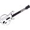

I love rock music! This is my style. From my first year at high school till now, I listen and enjoy it. The best way to do that is to go to a rock show. My dream was to go to U2 concert, because they were my favorite band for several years. After the show I was convinced that the feeling is so amazing it can be a dream. Here is a list of my top five rock shows:
- U2 - 360º Tour
- Therapy?
- Placebo
- The Exploited
- Faith no More

 My Life
My Life